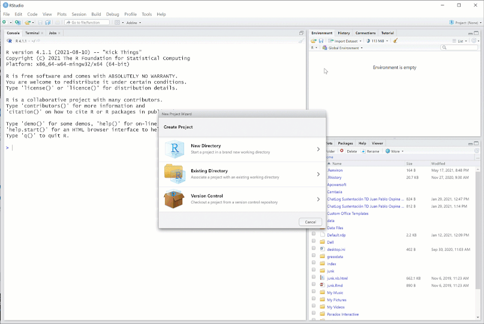
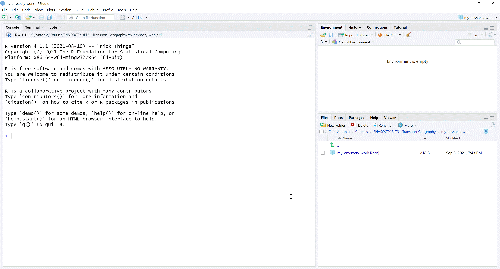
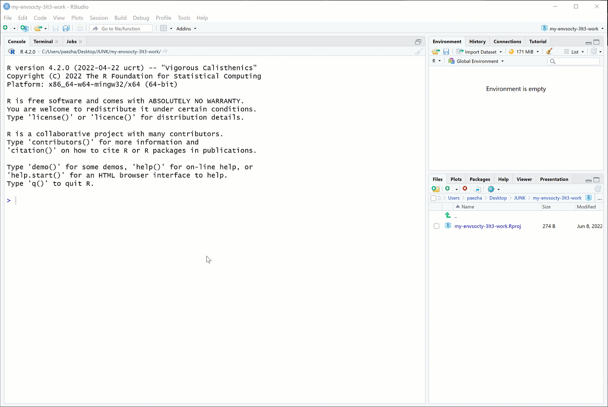

Package {edashop} is an open educational resource to teach a workshop on exploratory data analysis (EDA) using R and computational notebooks.
The package aims to combine various advantages of working with the R statistical computing project:
- Ease of distribution
- Reproducibility
- Availability of templates for computational notebooks
- Rigor in documentation of data sets and computational products
The package is designed for use in a 5-session workshop (approximately 10 hours) that teaches the principles of exploratory data analysis using R. The package includes the following components:
- Document templates with Sessions
- Data sets used in the Sessions or for individual practice/research
The Sessions are R markdown documents with the main contents of the workshop. These documents resemble lecture notes, but with a difference: they are literate programming documents that are are interactive and editable, which means that you can work with them in ways not possible with conventional printed notes.
Workshop outline
Session 1. Basics of working with R (2 h)
- Why
R? - Installing the software:
Rand R Studio - Packages
- Installing packages: CRAN and other sources
- Getting help
- (Break)
- Creating a project
- Directory structure
- Creating new files: types of files
- Literate programming
- Data objects/classes and basic operations
Session 2. Data (2 h)
- Why measuring things?
- Scales of measurement
- Data objects revisited
- (Break)
- Quick data summaries
- Data manipulation
- {dplyr}: a grammar of data manipulation
Session 3. Exploratory data analysis I: Descriptive statistics (2 h)
- What is EDA?
- Data summaries revisited
- Appropriate summary statistics by scale of measurement
- Properties of data: central tendency and spread
- (Break)
- Univariate description
- Bivariate description
- Multivariate description
What do I need to use this package?
The workshop does not assume knowledge of, or experience working with R. So, no previous knowledge regarding the software/language is required, besides experience using computers in general, and maybe a word processor (e.g., Microsoft Word) and spreadsheets (e.g., Microsoft Excel). To use the package you will begin from the very basics: how to install and use the necessary software: R and an Interactive Development Environment (e.g., RStudio) as explained next.
R: The open statistical computing project
What is R?
R is an open-source language for statistical computing. It was created in the early 1990s by Ross Ihaka and Robert Gentleman at the University of Auckland, New Zealand, as a way to provide their students with an accessible, no-cost statistical application for their courses. R is now maintained by the R Development Core Team, and it continues to be developed by hundreds of contributors around the globe. R is an attractive alternative to other software packages for data analysis (e.g., Microsoft Excel, Matlab, Stata, ArcGIS) due to its open-source character (i.e., it is free), its flexibility, and large user community. The size of the R community means that if there is something you want to do (for instance, estimate a linear regression model or plot geographical information), it is very likely that someone has already developed a package for it in R.
A good way to think about R is as a core package, with a library of optional packages that can be attached to increase its core functionality. R can be downloaded for free at:
R comes with a built-in console (a graphical user interface), but better alternatives to the basic interface include Interactive Development Environments like RStudio, which can also be downloaded for free:
https://www.rstudio.com/products/rstudio/download/
R requires you to work using the command line, which is going to be unfamiliar to many of you accustomed to user-friendly graphical interfaces. Do not fear. People worked for a long time using the command line, or using even more cumbersome systems, such as punched cards in early computers. Graphical user interfaces are convenient, but they have a major drawback, namely their inflexibility. A program that functions based on graphical user interfaces allows you to do only what is hard-coded in the user interface. Command line, as you will soon discover, is somewhat more involved, but provides much more flexibility in operation, and the ability to be more creative.
To begin, install R and RStudio in your computer. This video (5:23 min) shows how to install these applications.
If you have used R and have a previous instal, update it to R version 4.2.0 (2022-04-22) – “Vigorous Calisthenics”. The package was developed using “Vigorous Calisthenics”!
RStudio window: A Quick Tour
RStudio is an Interactive Development Environment (IDE for short). It takes the form of a familiar window application, and it provides a complete interface to interact with the language R. The application consists of a window with toolbars and several panes. Some panes include several tabs. There are the usual drop-down menus for common operations. See Figure 1 below.

Figure 1. RStudio IDE
The editor pane allows you to open and work with text and other files. In these files you can write instructions that can be passed on to R for execution. Writing something in the editor does not execute the instructions, it merely records them for possible future use.
The console pane is where instructions are passed on to the program. When an instruction is typed (or copied and pasted) there, R will understand that it needs to do something. The instructions must be written in a way that R understands, otherwise errors will occur.
The top-right pane includes a tab for the environment; this is where all data objects that are currently in memory are reported. The History tab in the same pane acts like a log: it keeps track of all instructions that have been executed in the console. Depending on your project, you may see other tabs there.
The last pane in the bottom-right includes a few other useful tabs. The File tab allows you to navigate directories in your computer, change the working directory, see what files are where, and so on. The Plot tab is where plots are rendered, when instructions require R to do so. The Packages tab allows you to manage packages, which as mentioned above, are pieces of code that can augment the functionality of R. The Help tab is where you can consult the documentation for functions/packages/see examples, and so on. The Viewer tab is for displaying web content locally. Many R functions create html output and it is in this pane where this kind of content can be previewed.
Quick Start Guide
Once you have installed R and RStudio you are ready to install the package {edashop}. The package is available from GitHub, and to install it you need to run the following code in your R console:
install.packages("remotes")
remotes::install_github("paezha/edashop")This will download the package to your personal library of packages and install it to make the package available for use locally. Behind the scenes, {envsocty3LT3} uses LaTeX to convert documents to PDF. For this you need to have install LaTeX in your system. The simplest approach on any platform is with R package tinytex, as follows:
install.packages(c('tinytex', 'rmarkdown'))
tinytex::install_tinytex()After restarting R Studio, confirm that you have LaTeX with the following command:
tinytex:::is_tinytex() Recommended Workflow
After installing the package, this is the recommended workflow for using it in the workshop.
Create a project for all your work in this workshop
Follow the steps below to create a new project. A project is the best way to keep your work in this workshop nicely organized.
You can create a new project using the buttons in the toolbar. Figure 2 shows one way of doing this:  Figure 2. Create new project - option 1
Figure 2. Create new project - option 1
Figure 3 shows an alternative way of doing the same, using the button for managing projects in the R Studio interface:  Figure 3. Create new project - option 2
Figure 3. Create new project - option 2
You then need to select a new directory to store your new project. Give the new directory a name, and save it in a place that you can easily find (for instance, the folder where you keep your academic work). Figure 4 illustrates the steps to do this: Figure 4. Choose to store the project in a new directory
After you click ‘Create Project’, you will have an R session with your new project. This will look like the image in Figure 5. Figure 5. Your project keeps all your files nicely organized
Working with templates
You need to restart R Studio once after installing the package before you can access the file templates for the Sessions.
After restarting the application, you will find that the templates are available when you choose to create a new R Markdown file. To work with templates, you start by creating a new R Markdown file with the option of using a template. As an example, select template eda-session-1-IT from package {edashop} and give it a name. The instructor will indicate which specific files to use (the example is for the Italian Edition of the workshop). After you click ‘OK’, a new R Markdown file will open in your editor. Also, notice that a new folder appears in your project to keep this file. The process is illustrated in Figure 6. Figure 6. Creating a new file from a template
Your new file is an R Markdown document. This is a text file with chunks of code that can be executed. eda-session-1-* will introduce you to the use of R Markdown, literate programming, and the basics of working with R. The document is editable, which means that you can annotate it. To begin with, you can add your name to the list of authors of the document. You can execute code by clicking on the ‘play’ icon on the top-right corner of a chunk of code. The template also includes a definition for a textbox. You can introduce a textbox in the text using this format:
Figure 7 illustrates these steps.  Figure 7. Working with a computational notebook
Figure 7. Working with a computational notebook
Once you are happy with your work using this file, you can create a pdf file (for archiving or to study) by knitting the document. Knitting will convert the R Markdown to a pdf file. Click the Knit button in the top left corner to do this. You can knit your document at any time, and as many times as you want; remember, you can always start afresh by creating a new R Markdown file with the same template. See Figure 8 for an example of knitting.  Figure 8. Click ‘Knit’ on the toolbar to convert your R Markdown into a pdf file
Figure 8. Click ‘Knit’ on the toolbar to convert your R Markdown into a pdf file
Figure 9 shows the result of knitting your R Markdown file.  Figure 9. The result of knitting is a pdf file with your workshop notes
Figure 9. The result of knitting is a pdf file with your workshop notes
Since you can edit and annotate the text, you can essentially customize the document so that it is a unique reflection of your learning. As you progress with the workshop and complete all the sessions, you will have a collection of unique documents that track your very personal learning experience.